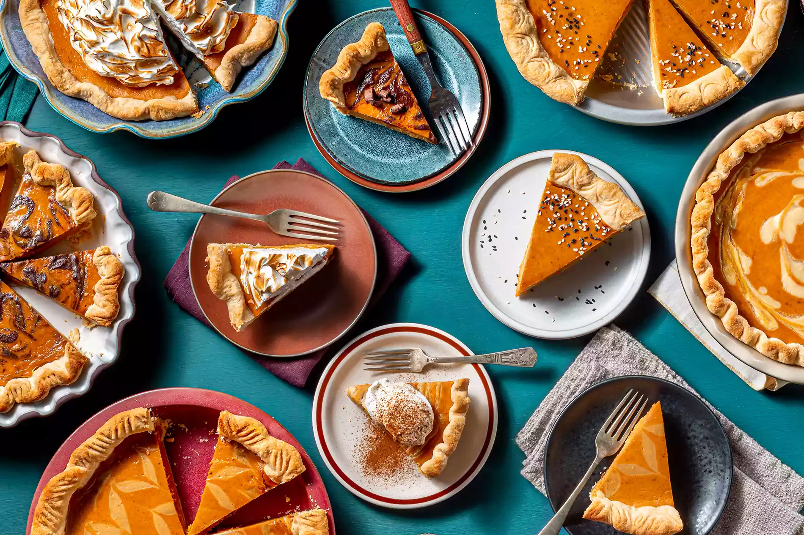

Lasanga Recipe

Pumpkin Pie, Your Way
Pumpkin pie rules the Thanksgiving dessert table. Those warming spices! That creamy pumpkin! That buttery crust! Plain pumpkin pie is clearly a classic for a reason, but it's also a great base for getting creative. That's why for Thanksgiving this year, Allrecipes challenged five of our favorite bakers with leveling up our simple pumpkin pie recipe. Developed by BobAltman in 2019, the recipe only has five ingredients: an unbaked pie crust, pumpkin puree, sweetened condensed milk, eggs, and pumpkin pie spice. It's as basic as it comes. So with a blank canvas, what did our bakers come up with? First, we need the rules.
ingredients
- 1 (9 inch) unbaked pie crust
- 1 (15 ounce) can pumpkin puree
- 1 (14 ounce) can sweetened condensed milk
- 2 large eggs
- 2 teaspoons pumpkin pie spice
- ¼ cup tahini
- ¼ cup heavy cream
- 1 teaspoon vanilla extract
- ¼ teaspoon salt
- 1 teaspoon toasted sesame seeds (Optional)
Directions
- Preheat the oven to 425 degrees F (220 degrees C).
- Place prepared pie crust onto a baking sheet.
- In a bowl, whisk together pumpkin, sweetened condensed milk, eggs, pumpkin pie spice, tahini, heavy cream, vanilla, and salt until smooth and combined. Pour into prepared pie crust.
- Place pan into oven and bake for 15 minutes. Reduce oven temp to 350 degrees F (175 degrees C) and continue baking until pie is set but the middle is still slightly jiggly, 30 to 35 minutes. Remove from the oven and allow pie to cool completely, at least 4 hours.
- If desired, garnish with toasted sesame seeds before serving